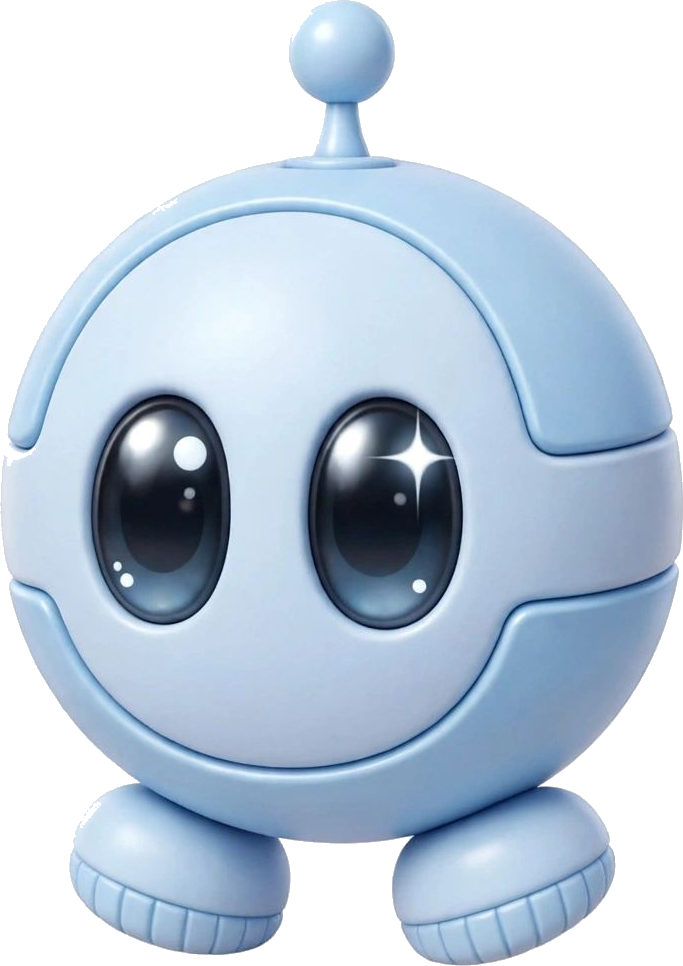

SIMULACIÓN GENERATIVA
ENERGÍA
100%
SECTOR —
Inicializando sensores...

Inicializando sensores...
Cinco exploradores están ocultos entre tu espacio real y un mundo generado. Muévete, habla y usa mi escáner: cada gesto cambia el entorno y mi respuesta.
Seis sectores, clima y anomalías nacen de una semilla.
Cámara, voz, teclado y tacto alteran la misión.
Genera pistas contextuales en texto y voz.
Las imágenes de la cámara se analizan localmente; sin permisos, la simulación funciona igual. El dictado depende de la API de voz del navegador. Abrir en pestaña completa ↗
El clima y la anomalía cambian durante la partida; Juansi adapta sus pistas a ambos.